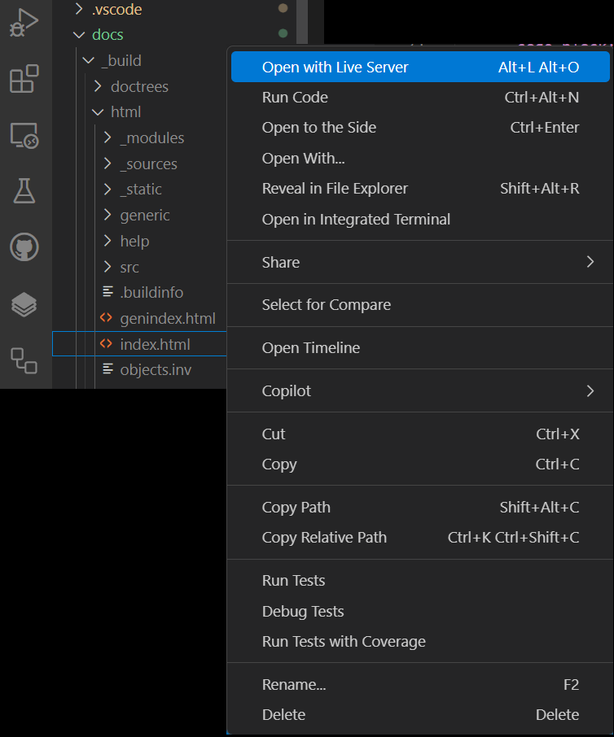

Create Documentation#
This is a guide to create documentation for the project using Sphinx in VS Code. Here you can find the documentation for reStructuredText. The following steps will help you with the correct commands and workdflows in the template repository.
Requirements#
The repository is ready and all requirements are installed as explained here: Start with repository.
For simple local testing, I recommend installing an extension in VS Code. The extension is called LiveServer and can be found and installed directly in VS Code: VS Code marketplace.
Customizing the documentation#
- Install necessary packages
Install the necessary packages from the requirements.txt file in docs/ for generating the documentation.
pip install -r docs/requirements.txt
- Change to the /docs directory
Your path in the terminal looks like: (.venv) D:gitYouAppsrc
cd ../docs
- Build html files
Basic command for building html files
make htmlPreviously delete the build directory and build html files
make clean && make html
This command can be useful because dependencies or formatting from previous builds interfere with or destroy the view of new elements. So if the documentation looks strange for some unknown reason, this can be tried to solve it.
- Start LiveServer
To start the LiveServer, you have to open the index.html file in the build/html directory. Right-click on the index.html file and select Open with Live Server:

{kind=link}